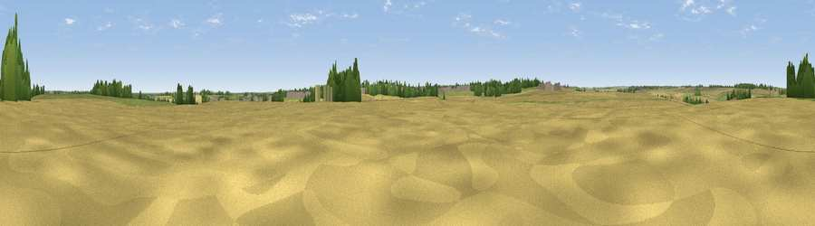

Viewpoint near Little Casterton
#43760 in England · top 87% of its area beats it · near Little CastertonWhere it is
The exact computed spot (TF 02109 09114). Click the marker for map links.
The view, rendered

A 360° render of this exact spot computed from the terrain model, tree cover and land cover — summer colours, afternoon light, calibrated against photographs of famous viewpoints. Real trees, hedges and buildings will differ in detail.
The panorama
Grey silhouette: terrain skyline in each direction (720 bearings, Earth curvature and refraction included). Dashed green: skyline with trees (+15 m) and buildings (+8 m) as obstacles. Blue strip: how far the ground is visible on each bearing.
Where the view opens
Wedge length = distance to the farthest visible ground on that bearing (vegetation-aware). Rings at 10, 25 and 50 km.
What fills the view
69% cropland · 20% grassland · 7% woodland · 3% built-up
Angular shares of the visible panorama (visual magnitude), not map area. Landscape diversity 0.39 (0–1 Shannon).
Key numbers
More beautiful places nearby
The staircase of upgrades: each row has a higher view potential than everything closer. Driving times are estimates from straight-line distance, calibrated against real road routing — check an actual route before setting out.
| Place | Direction | Drive | Score |
|---|---|---|---|
| Viewpoint near Stamford | SSE · 1 km | ~3 min | 19.8 |
| Viewpoint near Belmesthorpe | E · 3 km | ~7 min | 20.4 |
| Viewpoint near Little Casterton | NNW · 3 km | ~7 min | 25.7 |
| Viewpoint near Duddington | S · 9 km | ~18 min | 28.9 |
| Viewpoint near Toft | NE · 10 km | ~19 min | 47.9 |
| Viewpoint near Rockingham | SW · 23 km | ~38 min | 48.7 |
| Viewpoint near Owston | W · 25 km | ~40 min | 49.9 |
| Viewpoint near Pickwell | W · 25 km | ~41 min | 57.3 |
52.67013, -0.49142 · source: osm peak · position refined by local search. Computed location — check access rights before visiting.